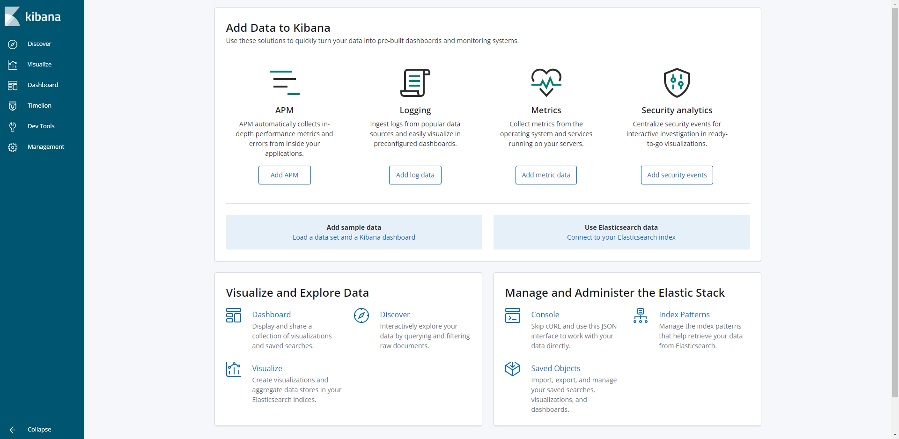

概述
Kubernetes 中比较流行的日志收集解决方案是 Elasticsearch、Fluentd 和 Kibana（EFK）技术栈，也是官方现在比较推荐的一种方案。
Elasticsearch是一个实时的、分布式的可扩展的搜索引擎，允许进行全文、结构化搜索，它通常用于索引和搜索大量日志数据，也可用于搜索许多不同类型的文档。Kibana是 Elasticsearch 的一个功能强大的数据可视化 Dashboard，Elasticsearch 通常与 Kibana 一起部署，Kibana 允许通过 web 界面来浏览 Elasticsearch 日志数据。Fluentd是一个流行的开源数据收集器，我们将在 Kubernetes 集群节点上安装 Fluentd，通过获取容器日志文件、过滤和转换日志数据，然后将数据传递到 Elasticsearch 集群，在该集群中对其进行索引和存储。
部署 Elasticsearch 集群
这里我们使用3个 Elasticsearch Pod 来避免高可用下多节点集群中出现的“脑裂”问题，当一个或多个节点无法与其他节点通信时会产生“脑裂”，可能会出现几个主节点。
更多 Elasticsearch 集群脑裂问题，可以查看文档 https://www.elastic.co/guide/en/elasticsearch/reference/current/modules-node.html#split-brain
一个关键点是参数discover.zen.minimum_master_nodes=N/2+1，其中N是 Elasticsearch 集群中符合主节点的节点数，比如我们这里3个节点，意味着N应该设置为2。这样，如果一个节点暂时与集群断开连接，则另外两个节点可以选择一个新的主节点，并且集群可以在最后一个节点尝试重新加入时继续运行，在扩展 Elasticsearch 集群时，一定要记住这个参数。
创建elasticsearch 的headless service
首先创建一个名为 elasticsearch 的无头服务，新建文件 elasticsearch-svc.yaml，文件内容如下：
kind: Service
apiVersion: v1
metadata:
name: elasticsearch
namespace: logging
labels:
app: elasticsearch
spec:
selector:
app: elasticsearch
clusterIP: None
ports:
- port: 9200
name: rest
- port: 9300
name: inter-node
定义了一个名为 elasticsearch 的 Service，指定标签app=elasticsearch，当我们将 Elasticsearch StatefulSet 与此服务关联时，服务将返回带有标签app=elasticsearch的 Elasticsearch Pods 的 DNS A 记录，然后设置clusterIP=None，将该服务设置成无头服务。最后，我们分别定义端口9200、9300，分别用于与 REST API 交互，以及用于节点间通信。
现在我们已经为 Pod 设置了无头服务和一个稳定的域名.elasticsearch.logging.svc.cluster.local，接下来我们通过 StatefulSet 来创建具体的 Elasticsearch 的 Pod 应用。
创建Elasticsearch 的 Pod 应用
Kubernetes StatefulSet 允许我们为 Pod 分配一个稳定的标识和持久化存储，Elasticsearch 需要稳定的存储来保证 Pod 在重新调度或者重启后的数据依然不变，所以需要使用 StatefulSet 来管理 Pod。
要了解更多关于 StaefulSet 的信息，可以查看官网关于 StatefulSet 的相关文档：https://kubernetes.io/docs/concepts/workloads/controllers/statefulset/。
apiVersion: apps/v1
kind: StatefulSet
metadata:
name: es-cluster
namespace: logging
spec:
serviceName: elasticsearch
replicas: 3
selector:
matchLabels:
app: elasticsearch
template:
metadata:
labels:
app: elasticsearch
spec:
containers:
- name: elasticsearch
image: 192.168.3.27:8888/library/elasticsearch-oss:6.6.2
resources:
limits:
cpu: 1000m
requests:
cpu: 100m
ports:
- containerPort: 9200
name: rest
protocol: TCP
- containerPort: 9300
name: inter-node
protocol: TCP
volumeMounts:
- name: data
mountPath: /usr/share/elasticsearch/data
env:
- name: cluster.name
value: k8s-logs
- name: node.name
valueFrom:
fieldRef:
fieldPath: metadata.name
- name: discovery.zen.ping.unicast.hosts
value: "es-cluster-0.elasticsearch,es-cluster-1.elasticsearch,es-cluster-2.elasticsearch"
- name: discovery.zen.minimum_master_nodes
value: "2"
- name: ES_JAVA_OPTS
value: "-Xms512m -Xmx512m"
initContainers:
- name: fix-permissions
image: busybox
command: ["sh", "-c", "chown -R 1000:1000 /usr/share/elasticsearch/data"]
securityContext:
privileged: true
volumeMounts:
- name: data
mountPath: /usr/share/elasticsearch/data
- name: increase-vm-max-map
image: busybox
command: ["sysctl", "-w", "vm.max_map_count=262144"]
securityContext:
privileged: true
- name: increase-fd-ulimit
image: busybox
command: ["sh", "-c", "ulimit -n 65536"]
securityContext:
privileged: true
volumeClaimTemplates:
- metadata:
name: data
labels:
app: elasticsearch
spec:
accessModes: [ "ReadWriteOnce" ]
storageClassName: nfs-dynamic-class
resources:
requests:
storage: 10Gi
pod模板的一些内容描述
该部分是定义 StatefulSet 中的 Pod，我们这里使用一个-oss后缀的镜像，该镜像是 Elasticsearch 的开源版本，如果你想使用包含X-Pack之类的版本，可以去掉该后缀。然后暴露了9200和9300两个端口，注意名称要和上面定义的 Service 保持一致。然后通过 volumeMount 声明了数据持久化目录，下面我们再来定义 VolumeClaims。最后就是我们在容器中设置的一些环境变量了：
- cluster.name：Elasticsearch 集群的名称，我们这里命名成 k8s-logs。
- node.name：节点的名称，通过metadata.name来获取。这将解析为 es-cluster-[0,1,2]，取决于节点的指定顺序。
- discovery.zen.ping.unicast.hosts：此字段用于设置在 Elasticsearch 集群中节点相互连接的发现方法。我们使用 unicastdiscovery 方式，它为我们的集群指定了一个静态主机列表。由于我们之前配置的无头服务，我们的 Pod 具有唯一的 DNS 域es-cluster-[0,1,2].elasticsearch.logging.svc.cluster.local，因此我们相应地设置此变量。由于都在同一个 namespace 下面，所以我们可以将其缩短为es-cluster-[0,1,2].elasticsearch。要了解有关 Elasticsearch 发现的更多信息，请参阅 Elasticsearch 官方文档：https://www.elastic.co/guide/en/elasticsearch/reference/current/modules-discovery.html。
- discovery.zen.minimum_master_nodes：我们将其设置为(N/2) + 1，N是我们的群集中符合主节点的节点的数量。我们有3个 Elasticsearch 节点，因此我们将此值设置为2（向下舍入到最接近的整数）。要了解有关此参数的更多信息，请参阅官方 Elasticsearch 文档：https://www.elastic.co/guide/en/elasticsearch/reference/current/modules-node.html#split-brain。
- ES_JAVA_OPTS：这里我们设置为-Xms512m -Xmx512m，告诉JVM使用512 MB的最小和最大堆。您应该根据群集的资源可用性和需求调整这些参数。要了解更多信息，请参阅设置堆大小的相关文档：https://www.elastic.co/guide/en/elasticsearch/reference/current/heap-size.html。
几个初始化容器
这里我们定义了几个在主应用程序之前运行的 Init 容器，这些初始容器按照定义的顺序依次执行，执行完成后才会启动主应用容器。
第一个名为 fix-permissions 的容器用来运行 chown 命令，将 Elasticsearch 数据目录的用户和组更改为1000:1000（Elasticsearch 用户的 UID）。因为默认情况下，Kubernetes 用 root 用户挂载数据目录，这会使得 Elasticsearch 无法方法该数据目录，可以参考 Elasticsearch 生产中的一些默认注意事项相关文档说明：https://www.elastic.co/guide/en/elasticsearch/reference/current/docker.html#_notes_for_production_use_and_defaults。
第二个名为 increase-vm-max-map 的容器用来增加操作系统对mmap计数的限制，默认情况下该值可能太低，导致内存不足的错误，要了解更多关于该设置的信息，可以查看 Elasticsearch 官方文档说明：https://www.elastic.co/guide/en/elasticsearch/reference/current/vm-max-map-count.html。
最后一个初始化容器是用来执行ulimit命令增加打开文件描述符的最大数量的。
此外 Elastisearch Notes for Production Use 文档还提到了由于性能原因最好禁用 swap，当然对于 Kubernetes 集群而言，最好也是禁用 swap 分区的。
测试是否安装成功
添加成功后，可以看到 logging 命名空间下面的所有的资源对象：
[root@master monitor]# kubectl get pod -n logging
NAME READY STATUS RESTARTS AGE
es-cluster-0 1/1 Running 42 19h
es-cluster-1 1/1 Running 0 19h
es-cluster-2 1/1 Running 0 18h
fluentd-es-6xgxd 1/1 Running 0 16h
fluentd-es-nt8d2 1/1 Running 0 16h
kibana-5bff696ff4-mkp4l 1/1 Running 0 18h
Pods 部署完成后，我们可以通过请求一个 REST API 来检查 Elasticsearch 集群是否正常运行。使用下面的命令将本地端口9200转发到 Elasticsearch 节点（如es-cluster-0）对应的端口：
[root@master monitor]# kubectl port-forward es-cluster-0 9200:9200 --namespace=logging
Forwarding from 127.0.0.1:9200 -> 9200
Forwarding from [::1]:9200 -> 9200
Handling connection for 9200
Handling connection for 9200
然后，在另外的终端窗口中，执行如下请求：
[root@master ~]# curl http://localhost:9200/_cluster/state?pretty |more
% Total % Received % Xferd Average Speed Time Time Time Current
Dload Upload Total Spent Left Speed
0 0 0 0 0 0 0 0 --:--:-- --:--:-- --:--:-- 0{
"cluster_name" : "k8s-logs",
"compressed_size_in_bytes" : 22679,
"cluster_uuid" : "p_AQ83sITaKreerPObVMag",
"version" : 3259,
"state_uuid" : "vpG1GH2bT9mSbwF9nqTlzw",
"master_node" : "0SkArt-FTVih5fzWQkGEMw",
"blocks" : { },
"nodes" : {
"0SkArt-FTVih5fzWQkGEMw" : {
"name" : "es-cluster-1",
"ephemeral_id" : "wxjSdWb5SNqqSowx_d-UkQ",
"transport_address" : "10.2.35.139:9300",
"attributes" : { }
},
"YeC_0S6eR7KeKcylEtneJg" : {
"name" : "es-cluster-0",
"ephemeral_id" : "9FaV_urNT8GCuOU32di89A",
"transport_address" : "10.2.16.37:9300",
"attributes" : { }
},
"ynGIAwAUSOa8yfJs2sbWlw" : {
"name" : "es-cluster-2",
"ephemeral_id" : "gKFv1069QZ6S-ELVXNkWsQ",
"transport_address" : "10.2.35.140:9300",
"attributes" : { }
}
},
...
...
...
看到上面的信息就表明我们名为 k8s-logs 的 Elasticsearch 集群成功创建了3个节点：es-cluster-0，es-cluster-1，和es-cluster-2，当前主节点是 es-cluster-0。
部署kibana
Elasticsearch 集群启动成功了，接下来我们可以来部署 Kibana 服务，新建一个名为 kibana.yaml 的文件，对应的文件内容如下：
apiVersion: v1
kind: Service
metadata:
name: kibana
namespace: logging
labels:
app: kibana
spec:
ports:
- port: 5601
type: NodePort
selector:
app: kibana
---
apiVersion: apps/v1
kind: Deployment
metadata:
name: kibana
namespace: logging
labels:
app: kibana
spec:
selector:
matchLabels:
app: kibana
template:
metadata:
labels:
app: kibana
spec:
containers:
- name: kibana
image: 192.168.3.27:8888/library/kibana-oss:6.6.2
resources:
limits:
cpu: 1000m
requests:
cpu: 100m
env:
- name: ELASTICSEARCH_URL
value: http://elasticsearch:9200
ports:
- containerPort: 5601
上面我们定义了两个资源对象，一个 Service 和 Deployment，为了测试方便，我们将 Service 设置为了 NodePort 类型，Kibana Pod 中配置都比较简单，唯一需要注意的是我们使用 ELASTICSEARCH_URL 这个环境变量来设置Elasticsearch 集群的端点和端口，直接使用 Kubernetes DNS 即可，此端点对应服务名称为 elasticsearch，由于是一个 headless service，所以该域将解析为3个 Elasticsearch Pod 的 IP 地址列表。
# kubectl get svc --namespace=logging
NAME TYPE CLUSTER-IP EXTERNAL-IP PORT(S) AGE
elasticsearch ClusterIP None <none> 9200/TCP,9300/TCP 19h
kibana NodePort 10.1.184.32 <none> 5601:26299/TCP 18h
如果 Pod 已经是 Running 状态了，证明应用已经部署成功了，然后可以通过 NodePort 来访问 Kibana 这个服务，在浏览器中打开http://<任意节点IP>:26299 即可，如果看到如下欢迎界面证明 Kibana 已经成功部署到了 Kubernetes集群之中。

部署fluented
Fluentd 是一个高效的日志聚合器，是用 Ruby 编写的，并且可以很好地扩展。对于大部分企业来说，Fluentd 足够高效并且消耗的资源相对较少，另外一个工具Fluent-bit更轻量级，占用资源更少，但是插件相对 Fluentd 来说不够丰富，所以整体来说，Fluentd 更加成熟，使用更加广泛，所以我们这里也同样使用 Fluentd 来作为日志收集工具。
工作原理
Fluentd 通过一组给定的数据源抓取日志数据，处理后（转换成结构化的数据格式）将它们转发给其他服务，比如 Elasticsearch、对象存储等等。Fluentd 支持超过300个日志存储和分析服务，所以在这方面是非常灵活的。主要运行步骤如下：
- 首先 Fluentd 从多个日志源获取数据
- 结构化并且标记这些数据
- 然后根据匹配的标签将数据发送到多个目标服务去

配置
一般来说我们是通过一个配置文件来告诉 Fluentd 如何采集、处理数据的，下面简单和大家介绍下 Fluentd 的配置方法。
安装
configMap
# cat fluted-cm.yaml
kind: ConfigMap
apiVersion: v1
metadata:
name: fluentd-config
namespace: logging
labels:
addonmanager.kubernetes.io/mode: Reconcile
data:
system.conf: |-
<system>
root_dir /tmp/fluentd-buffers/
</system>
containers.input.conf: |-
<source>
@id fluentd-containers.log
@type tail
path /var/log/containers/*.log
pos_file /var/log/es-containers.log.pos
time_format %Y-%m-%dT%H:%M:%S.%NZ
localtime
tag raw.kubernetes.*
format json
read_from_head true
</source>
# Detect exceptions in the log output and forward them as one log entry.
<match raw.kubernetes.**>
@id raw.kubernetes
@type detect_exceptions
remove_tag_prefix raw
message log
stream stream
multiline_flush_interval 5
max_bytes 500000
max_lines 1000
</match>
system.input.conf: |-
# Logs from systemd-journal for interesting services.
<source>
@id journald-docker
@type systemd
filters [{ "_SYSTEMD_UNIT": "docker.service" }]
<storage>
@type local
persistent true
</storage>
read_from_head true
tag docker
</source>
<source>
@id journald-kubelet
@type systemd
filters [{ "_SYSTEMD_UNIT": "kubelet.service" }]
<storage>
@type local
persistent true
</storage>
read_from_head true
tag kubelet
</source>
forward.input.conf: |-
# Takes the messages sent over TCP
<source>
@type forward
</source>
output.conf: |-
# Enriches records with Kubernetes metadata
<filter kubernetes.**>
@type kubernetes_metadata
</filter>
<match **>
@id elasticsearch
@type elasticsearch
@log_level info
include_tag_key true
host elasticsearch
port 9200
logstash_format true
request_timeout 30s
<buffer>
@type file
path /var/log/fluentd-buffers/kubernetes.system.buffer
flush_mode interval
retry_type exponential_backoff
flush_thread_count 2
flush_interval 5s
retry_forever
retry_max_interval 30
chunk_limit_size 2M
queue_limit_length 8
overflow_action block
</buffer>
</match>
deployment
apiVersion: v1
kind: ServiceAccount
metadata:
name: fluentd-es
namespace: logging
labels:
k8s-app: fluentd-es
kubernetes.io/cluster-service: "true"
addonmanager.kubernetes.io/mode: Reconcile
---
kind: ClusterRole
apiVersion: rbac.authorization.k8s.io/v1
metadata:
name: fluentd-es
labels:
k8s-app: fluentd-es
kubernetes.io/cluster-service: "true"
addonmanager.kubernetes.io/mode: Reconcile
rules:
- apiGroups:
- ""
resources:
- "namespaces"
- "pods"
verbs:
- "get"
- "watch"
- "list"
---
kind: ClusterRoleBinding
apiVersion: rbac.authorization.k8s.io/v1
metadata:
name: fluentd-es
labels:
k8s-app: fluentd-es
kubernetes.io/cluster-service: "true"
addonmanager.kubernetes.io/mode: Reconcile
subjects:
- kind: ServiceAccount
name: fluentd-es
namespace: logging
apiGroup: ""
roleRef:
kind: ClusterRole
name: fluentd-es
apiGroup: ""
---
apiVersion: apps/v1
kind: DaemonSet
metadata:
name: fluentd-es
namespace: logging
labels:
k8s-app: fluentd-es
version: v2.2.0
kubernetes.io/cluster-service: "true"
addonmanager.kubernetes.io/mode: Reconcile
spec:
selector:
matchLabels:
k8s-app: fluentd-es
version: v2.2.0
template:
metadata:
labels:
k8s-app: fluentd-es
kubernetes.io/cluster-service: "true"
version: v2.2.0
# This annotation ensures that fluentd does not get evicted if the node
# supports critical pod annotation based priority scheme.
# Note that this does not guarantee admission on the nodes (#40573).
annotations:
scheduler.alpha.kubernetes.io/critical-pod: ''
spec:
priorityClassName: system-node-critical
serviceAccountName: fluentd-es
containers:
- name: fluentd-es
image: 192.168.3.27:8888/library/fluentd-elasticsearch:v2.2.0
env:
- name: FLUENTD_ARGS
value: --no-supervisor -q
resources:
limits:
memory: 500Mi
requests:
cpu: 100m
memory: 200Mi
volumeMounts:
- name: varlog
mountPath: /var/log
- name: varlibdockercontainers
mountPath: /var/lib/docker/containers
readOnly: true
- name: config-volume
mountPath: /etc/fluent/config.d
nodeSelector:
beta.kubernetes.io/fluentd-ds-ready: "true"
tolerations:
- key: node-role.kubernetes.io/master
operator: Exists
effect: NoSchedule
terminationGracePeriodSeconds: 30
volumes:
- name: varlog
hostPath:
path: /var/log
- name: varlibdockercontainers
hostPath:
path: /var/lib/docker/containers
- name: config-volume
configMap:
name: fluentd-config
将上面创建的 fluentd-config 这个 ConfigMap 对象通过 volumes 挂载到了 Fluentd 容器中，另外为了能够灵活控制哪些节点的日志可以被收集，所以我们这里还添加了一个 nodSelector 属性：
nodeSelector:
beta.kubernetes.io/fluentd-ds-ready: "true"
默认情况下 master 节点有污点，所以要想也收集 master 节点的日志，则需要添加上容忍：
tolerations:
- key: node-role.kubernetes.io/master
operator: Exists
effect: NoSchedule
还需要注意的是docker容器的根目录位置
创建完成后，查看对应的 Pods 列表，检查是否部署成功：
# kubectl get pods -n logging
NAME READY STATUS RESTARTS AGE
es-cluster-0 1/1 Running 42 19h
es-cluster-1 1/1 Running 0 19h
es-cluster-2 1/1 Running 0 19h
fluentd-es-6xgxd 1/1 Running 0 17h
fluentd-es-nt8d2 1/1 Running 0 17h
kibana-5bff696ff4-mkp4l 1/1 Running 0 18h
参考
https://github.com/kubernetes/kubernetes/tree/master/cluster/addons/fluentd-elasticsearch